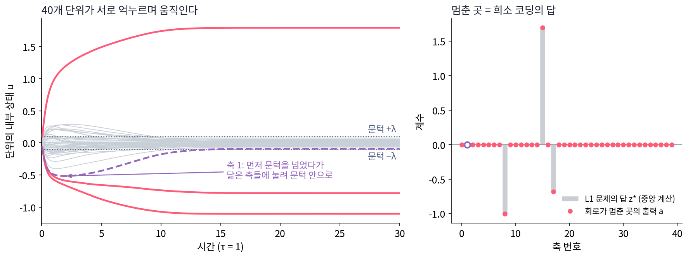
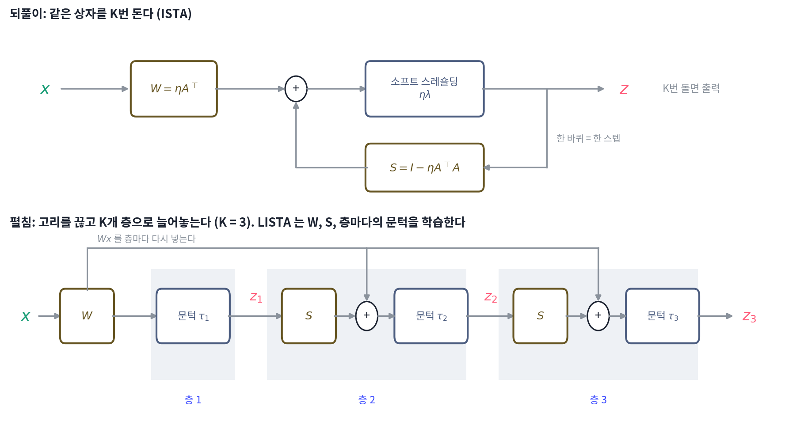
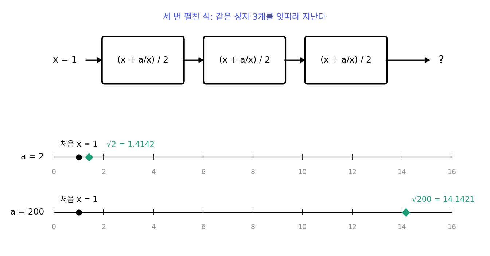
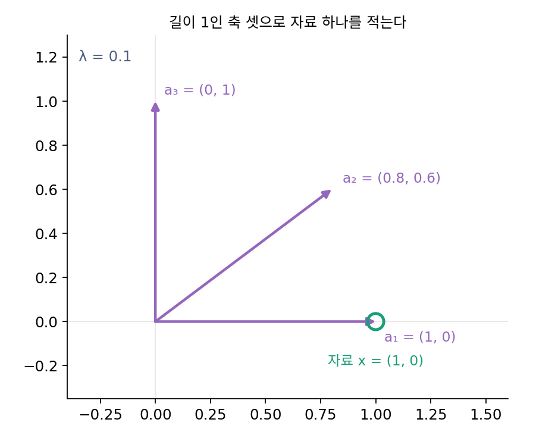
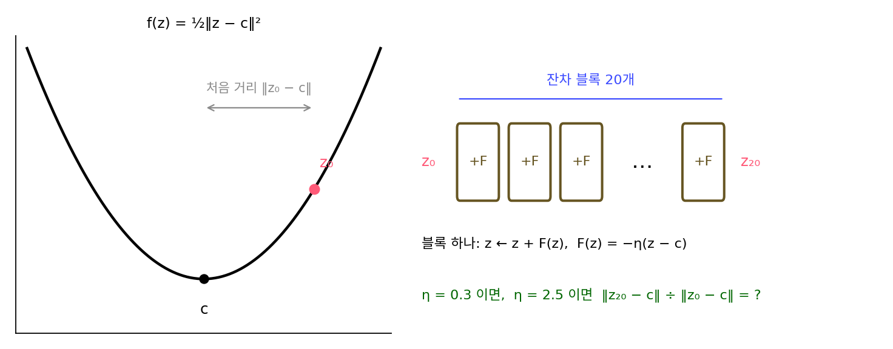

언롤드 최적화: 층은 최적화의 한 스텝
이 장의 물음
희소 코딩은 축을 넉넉히 모아 두고(딕셔너리) 자료마다 그 가운데 몇 개만 골라, 자료 하나를 축 몇 개의 합으로 적는 일이었다. 어느 축을 얼마만큼 쓸지는 L1 페널티가 붙은 최소화 문제의 답으로 정했고, 그 답은 ISTA 로 찾았다. 경사 한 스텝을 내딛고 작은 계수를 0으로 깎는 소프트 스레숄딩을 한 번 거치는 일을 답이 멈출 때까지 되풀이하는 방법이다. 이 장의 장난감 문제에서는 자료가 하나 들어올 때마다 그 되풀이가 100번 가까이 돌아야 답에 붙는다.
한편 신경망을 다뤄 본 사람은 다른 모양의 되풀이를 날마다 본다. ResNet 은 같은 꼴의 블록을 수십 개 쌓고, 블록마다 입력에 무언가를 더해 다음 블록으로 넘긴다. 트랜스포머도 어텐션과 MLP 를 한 쌍으로 묶은 블록을 열 번, 스무 번 쌓는다. 이 쌓는 모양은 대부분 써 보니 잘 되어서 남은 것이라, 블록 하나하나가 무엇을 하는지 물으면 「특징을 뽑는다」 정도의 답밖에 없다.
- 같은 스텝을 K번 되풀이하는 알고리즘과 K층 신경망은 어디가 같고 어디가 다를까?
- 되풀이 알고리즘의 스텝을 자료에 맞춰 배우게 하면 스텝 수를 얼마나 줄일 수 있을까? 그 대가는 무엇일까?
- 트랜스포머의 어텐션과 MLP 를 무언가를 줄여 가는 한 스텝으로 읽을 수 있을까? 그렇게 읽을 증거는 어디까지 있을까?
언롤드 최적화: 되풀이 K번을 K층으로 적는다
ISTA 의 한 스텝을 계산 순서대로 적어 보면 이렇다. 지금 코드로 자료를 되살려 보고, 원래 자료와 어긋난 만큼을 딕셔너리로 되돌려 보내 코드를 고친 뒤, 소프트 스레숄딩으로 작은 계수를 깎는다. 계산으로 보면 행렬을 곱하고, 더하고, 칸마다 같은 비선형 함수를 씌우는 일인데, 신경망의 층 하나가 하는 일도 행렬 곱, 덧셈, 칸마다 씌우는 비선형 함수다. 그렇다면 ISTA 를 100스텝 돌리는 일은 100층짜리 신경망에 자료를 한 번 통과시키는 일과 무엇이 다를까?
역사: 되풀이를 신경 회로로 그리기
희소 코딩을 뇌가 정말 할 수 있느냐는 물음은 계산 신경과학의 오랜 걱정거리였다. 최소화 문제를 푸는 컴퓨터 프로그램은 중앙에서 모든 계수를 한꺼번에 들여다보지만, 신경 세포는 이웃과 신호를 주고받을 뿐이다. 로젤(Christopher Rozell)·존슨(Don Johnson)·바라니우크(Richard Baraniuk)·올스하우젠(Bruno Olshausen)은 2008년 『Neural Computation』에 낸 논문에서 신경 세포를 닮은 단위 여럿이 서로를 억누르며 시간에 따라 움직이는 계를 세웠다. 논문 제목은 「문턱과 국소 경쟁으로 하는 희소 코딩(Sparse Coding via Thresholding and Local Competition in Neural Circuits)」이다. 단위마다 입력이 문턱을 넘어야 출력을 내고, 비슷한 축을 맡은 단위끼리는 서로를 억누른다. 이 계가 멈추는 곳이 희소 코딩 문제의 답이고, 그렇게 얻은 코드는 보통의 중앙 계산 방법과 비슷하게 희소했다고 그들은 보고했다.
이 계를 시간을 한 칸씩 끊어 계산하면 ISTA 를 닮은 되풀이가 된다. 되풀이 알고리즘을 「계산 절차」가 아니라 「되먹임이 있는 회로」로 볼 수 있다는 것이다. 회로를 시간 칸마다 잘라 옆으로 늘어놓으면 층이 쌓인 그림이 된다.


서로 억누르는 단위 여럿이라니, 지금 같으면 행렬 곱 한 줄이잖아요. 뇌가 그걸 할 수 있냐는 게 왜 그렇게 오래된 걱정이었어요?

컴퓨터 프로그램은 계수 마흔 개를 한 메모리에 올려 두고 한꺼번에 고쳐요. 신경 세포 하나는 그 마흔 개를 볼 수 없고, 이웃에게서 오는 신호만 받아요. 제 앞만 보는 단위들이 중앙에서 푼 것과 같은 답에 닿는지를 보이는 게 그 논문이 한 일이에요.

각자 제 입력만 보고 움직이면 엉뚱한 데서 멈출 수도 있겠네요. 닮은 축 둘이 둘 다 켜진 채로요.

그래서 억누르는 세기를 아무렇게나 둘 수 없었어요. 두 축이 닮은 만큼, 두 축의 안쪽 곱만큼 서로를 누르게 해야 이 계가 멈추는 곳이 희소 코딩 문제의 답과 같아져요.

그럼 그 세기는 누가 정해요? 뇌가 딕셔너리를 미리 알 리는 없잖아요.
그 논문에서는 딕셔너리에서 계산해 넣었어요. 연결 세기를 자료로 배우게 하는 일은 그 논문이 다루지 않았어요.

회로가 시간 칸마다 한 번씩 고친다면 칸 하나가 ISTA 스텝 하나예요. 그럼 그 칸들을 옆으로 늘어놓은 것도 신경망의 층이라고 불러도 돼요?
축 마흔 개로 자료 스무 칸을 적기
이 장의 장난감 문제에서 자료 x 는 수 20개로 된 벡터이고, 딕셔너리 A 에는 길이 1인 축이 40개 있다. 축이 칸 수의 두 배라서 같은 자료를 적는 방법이 여럿이고, 그 가운데 축을 적게 쓰는 코드를 L1 페널티로 고른다. 자료는 축 40개 가운데 3개를 아무렇게나 골라 정규분포 계수를 곱해 더하고, 표준편차 0.01의 노이즈를 얹어 만들었다. 페널티 세기는 λ = 0.1 이고, 스텝 크기를 η(에타)라 하면 ISTA 의 한 스텝은 다음 식이다.
이 문제에서 AᵀA 의 가장 큰 고윳값은 5.027이라 스텝 크기는 η = 0.199, 문턱은 0.0199다. 정답 코드 z* 는 같은 문제를 수천 스텝 풀어 얻었다. 학습에 쓰지 않은 시험 자료 2,000개에서 스텝 수마다 코드가 정답에서 얼마나 떨어져 있는지 재면 다음과 같다. 오차는 ‖z − z*‖² 의 평균을 ‖z*‖² 의 평균으로 나눈 상대 제곱 오차다.
| ISTA 스텝 수 | 1 | 2 | 5 | 10 | 20 | 50 | 100 |
|---|---|---|---|---|---|---|---|
| 상대 제곱 오차 | 69.6% | 59.3% | 44.4% | 31.4% | 17.0% | 3.24% | 0.311% |
| 0 아닌 계수 수(평균) | 30.2 | 28.4 | 23.0 | 17.6 | 12.0 | 5.7 | 3.6 |
ISTA 첫 스텝 뒤의 코드는 축 40개 가운데 30개를 쓴다. 자료를 만든 축은 3개뿐인데, 자료와 조금이라도 닮은 축이 모두 계수를 받은 것이다. 스텝이 쌓이면서 비슷한 축끼리 계수를 다투고, 진 쪽이 문턱 아래로 밀려 0이 되는데, 이렇게 해서 오차가 1% 아래로 내려가기까지 75스텝이 필요하다.
이제 ISTA 의 식을 다시 묶어 보자. 괄호를 풀면 zₖ 에 곱해지는 행렬과 x 에 곱해지는 행렬이 따로 나온다.
괄호 안은 「행렬 곱 두 번과 덧셈」, 바깥은 「칸마다 같은 비선형 함수」이니 신경망의 층 하나와 꼴이 같다. 다른 점은 둘인데, 층마다 x 가 다시 들어오고, 모든 층이 같은 W, S, 문턱을 쓴다. 그래서 ISTA 를 K번 돌리는 일은 같은 층을 K개 쌓은 신경망에 자료를 한 번 통과시키는 일과 같다. 되풀이 알고리즘의 스텝 하나하나를 신경망의 층 하나하나로 늘어놓아 적은 것을 언롤드 최적화 (되풀이를 층으로 펼쳐 적은 신경망, unrolled optimization)라 한다.

펼쳐 놓고 나면 물음이 하나 생긴다. 고리였을 때는 모든 바퀴가 같은 상자를 지나야 했지만, 늘어놓은 층은 서로 다른 값을 가져도 된다. W 와 S 와 문턱을 A 에서 계산해 정하는 대신, 자료를 보고 배우게 하면 어떻게 될까?
ML에서: 잔차 연결은 경사 한 스텝의 꼴
어떤 함수 f 를 줄이는 경사 한 스텝 z ← z − η∇f(z) 은 「지금 값에 고칠 양(그래디언트에 스텝 크기를 곱한 것)을 더한다」는 꼴이다. 허 카이밍(Kaiming He) 외의 ResNet(2015년 발표, CVPR 2016)의 잔차 블록 z ← z + F(z) 도 같은 꼴이다. F 가 −η∇f 라면 잔차 블록을 쌓은 신경망은 f 를 줄이는 경사하강을 펼쳐 놓은 것이 된다. 다만 학습한 ResNet 의 F 가 어떤 함수의 그래디언트라는 보장은 없으므로, 이 읽기가 주는 것은 꼴의 닮음이고 층마다 무엇을 줄이는지는 따로 밝혀야 한다.
문제 1. 계산기로 √2 구하기
계산기에 √ 단추가 없어도, 양수 a 의 제곱근은 x ← (x + a/x)/2 를 되풀이하면 구할 수 있다. (가) a = 2, 처음 x = 1 에서 시작해 몇 번 되풀이해야 소수 여섯째 자리까지 맞는가? (나) 두 번 되풀이한 결과를 x 와 a 로 된 식 하나로 적어라. 두 번 펼친 식에 a = 2, x = 1 을 넣으면 얼마인가? (다) (나)처럼 세 번을 펼친 식을 a = 200 에 쓰면 어떻게 되는가?

바로 돌려 봤어요. 1.5, 1.41666667, 1.41421569, 1.41421356. 네 번이면 돼요.
(나)는요? 되풀이를 한 줄로 적어 보는 거예요.
첫 번째 결과가 x₁ = (x + a/x)/2 니까, 두 번째는 x₁ 자리에 그걸 그대로 넣어요. ((x + a/x)/2 + a/((x + a/x)/2))/2. 1과 2를 넣으면 17/12 = 1.416667 이에요.

같은 상자를 두 번 지나는 걸 식 하나로 적은 거네. 되풀이 횟수를 정해 두면 그냥 함수 하나야.
그 함수를 세 번 펼쳐서 a = 200 에 쓰면요?

27.5739 가 나와요. 참값은 14.1421 인데요? 2 에서는 세 번이면 오차가 0.000002 였는데요.

처음 x = 1 이 √200 에서 너무 멀어서 그런 거 아닐까? 2 에서는 1 이 꽤 가까웠잖아.
그럼 몇 번 돌아야 맞는데? 돌려 볼게요. …일곱 번은 돌아야 여섯째 자리까지 맞아요.
횟수를 고정해 펼친 식은 그 횟수에 맞는 입력에서만 믿을 수 있는 거네.
그래요. 되풀이는 「멈출 때까지」 돌 수 있지만, 펼친 식은 미리 정한 층 수에서 끝나요. 층 수가 모자라면 더 돌 길이 없어요.

과제 검토를 「세 번 읽고 낸다」로 정해 두면 짧은 과제는 넉넉한데 긴 과제는 세 번으로 모자라요. 펼친 식도 정해 둔 횟수만큼만 읽는 검토예요.
문제 2. 닮은 두 축이 계수를 다툰다
평면의 자료를 축 셋 a₁ = (1, 0), a₂ = (0.8, 0.6), a₃ = (0, 1) 로 적는다. 자료는 x = a₁ = (1, 0), 페널티 세기 λ = 0.1 이다. (가) 스텝 크기 η = 1/L 은 얼마이고, W = ηAᵀ, S = I − ηAᵀA 는 무엇인가? (나) z₀ = 0 에서 ISTA 를 한 스텝, 두 스텝 돌리면 코드는? 정답 코드는 (0.9, 0, 0) 이다. (다) S 의 대각 밖을 모두 0으로 바꾸고 오래 돌리면 어디로 가는가?

AᵀA 의 가장 큰 고윳값이 2 라서 η = 0.5 예요. W 는 행이 (0.5, 0), (0.4, 0.3), (0, 0.5), S 는 대각이 0.5 고 S₁₂ = −0.4, S₂₃ = −0.3 이에요. Wx = (0.5, 0.4, 0) 이고 문턱 0.05 를 깎으면 첫 스텝은 (0.45, 0.35, 0).
잠깐, 자료는 a₁ 그 자체인데 a₂ 계수가 0.35 야? 정답은 0 이잖아.
첫 스텝에서는 S 가 아직 아무 일도 하지 않았어요. z₀ = 0 이니까요. 첫 스텝의 계수는 무엇을 보고 정해졌나요?
Wx 만 봤어요. 자료가 축마다 얼마나 닮았는지요. a₂ 는 a₁ 과 안쪽 곱이 0.8 이라 자료와 많이 닮았으니 큰 계수를 받았어요.
두 번째 스텝은 (0.535, 0.345, −0.055) 예요. a₁ 은 올라가고 a₂ 는 아주 조금 내려갔어요. a₃ 는 음수가 됐고요.
S₁₂ = −0.4 가 무슨 일을 했는지 보세요. z₁ 이 커질수록 z₂ 로 들어가는 입력이 줄어요. a₁ 이 자료를 설명하고 나면 a₂ 가 설명할 나머지가 남지 않는 거예요.

그래서 S 의 대각 밖이 「닮은 축끼리 억누르는 항」이군요. 그런데 꽤 느려요. 스크립트로 보니 z₂ 가 0 이 되는 건 25스텝째예요.
(다)는요? 억누름을 없애면요.
S 의 대각만 남기고 200스텝 돌리면 (0.9, 0.7, 0) 에서 멈춰요. 이걸로 되살리면 Az = (1.46, 0.42) 라서 자료 (1, 0) 하고 한참 달라요.
축마다 따로따로 「나랑 닮았나」만 물으면 닮은 축 둘이 자료의 같은 부분을 두 번 설명하는 거네. 억누름이 있어야 한 축이 설명한 부분을 다른 축이 내려놓아.
조별 과제에서 다들 자기가 맡은 줄 알고 같은 부분을 써 오면 보고서에 같은 내용이 두 번 들어가잖아요. 서로 「그건 내가 했어」라고 알려 줘야 겹치지 않아요.
문제 3. 잔차 블록 스무 개
잔차 블록 z ← z + F(z) 를 20개 쌓았다. 블록마다 F(z) = −η(z − c) 라면, 이 신경망은 f(z) = ½‖z − c‖² 를 줄이는 경사하강을 20스텝 펼친 것이다. (가) η = 0.3 이면 블록 하나를 지날 때마다 z 와 c 의 거리가 몇 배가 되고, 20개를 지나면 몇 배가 되는가? (나) η = 2.5 이면? (다) 실제 ResNet 의 F 는 이렇게 생기지 않았다. 그래도 이 읽기에서 얻을 것이 있는가?

z − c 가 블록마다 (1 − η) 배가 돼요. η = 0.3 이면 0.7 배, 스무 개면 0.7²⁰ = 0.000798 배. 열세 개만 지나도 1% 아래예요.
η = 2.5 는요?
1 − 2.5 = −1.5 라서 블록마다 부호가 바뀌면서 1.5 배씩 커져요. 스무 개면 3,325 배예요. 층을 쌓을수록 망가지네요.
f 의 곡률이 1 이니까 스텝 크기가 2 를 넘으면 튕겨 나가는 거야. η = 1.9 면 0.9 배씩이라 아직은 줄어들어.
(다)는요? 실제 ResNet 의 F 는 학습으로 정한 합성곱 몇 층이에요.
그 F 가 어떤 함수의 그래디언트인지 모르니까 「경사하강을 펼친 것」이라고 말할 수는 없어요. 꼴만 같아요.
맞아요. 그래도 꼴이 같으면 질문을 빌려 올 수 있어요. 이 블록들의 스텝이 너무 크지 않은가, 층을 지날 때마다 무엇이 줄어드는가. 그 질문에 답이 있으면 읽기가 설명이 되고, 없으면 비유로 남아요.
조교님이 제 코드를 보고 「이건 버블 정렬이랑 모양이 같네」 하셨는데, 정말 정렬을 하는지는 돌려 보고서야 알았어요. 잔차 블록도 모양만 봐서는 몰라요.